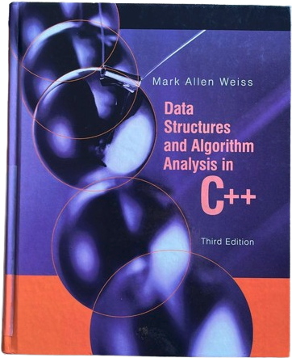
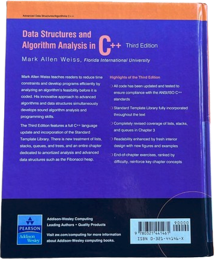

Proggers Bookclub
Clube do livro de programação.
abra um pr para editar essa pagina: github.com/guites/proggers.
Membros
Em cada encontro um dos participantes vai guiar a conversa sobre o capítulo lido na semana anterior.
Pode ser preparado algum material para apresentação como slides, código, exemplos, etc, mas não é obrigatório.
# Designing Data-Intensive Applications
 o livro do porcão
o livro do porcão
As reuniões são online, nas quarta-feiras às 19h30, a cada 7~15 dias. Se você tem interesse em participar, entre em contato.
- Autor
- Martin Kleppmann
- Links
-
- Cronograma
-
- 1º encontro: 08/04/2026
- 2º encontro: 15/04/2026
- 3º encontro: 22/04/2026
- 4º encontro: 29/04/2026
- Status
- Em andamento (início 08/04/26)
# Data Structures and Algorithm Analysis in C++


- Autor
- Mark Allen Weiss
- Links
-
- Cronograma
-
1º encontro: 26/11/2025 - Guilherme ✅2º encontro: 03/12/2025 - Gabriel ✅3º encontro: 10/12/2025 - Leonardo ✅4º encontro: 17/12/2025 - Lucas ✅- 5º encontro: 15/01/2026 - Guilherme
- Status
- Finalizado